Pade Approximation
Source inspiration: (Mathew 2000-2019).
Description
Padé approximant is a rationale function approximation expanded from a function value and the derivative function values similar to Taylor Series. Often, Padé approximant’s can converge when Taylor Series does not even though both use the same information at a point. The key is Taylor Series is a polynomial while Padé approximant is a rationale function. Rationale functions can have singularities/vertical-asymptotes and horizontal asymptotes. Polynomials do not have asymptotes or singularities.
Padé approximation replaces a polynomial truncation with a ratio of two polynomials,
\[ R_{m,n}(x)=\frac{P_m(x)}{Q_n(x)},\qquad Q_n(x_0)=1, \]
and chooses coefficients so the Taylor expansion of \(R_{m,n}\) about \(x_0\) matches the target function through order \(m+n\). This really means derivatives match for give \(m\) and \(n\).
Compared with a Taylor polynomial of the same total order, Padé approximants can represent poles and often stay accurate on larger intervals, especially for functions with nearby singularities or branch-point behavior.
High-order Padé Approximants can be hard to compute because of how fast the coefficients grow. Total orders (denominator plus numerator order) of less than 20 fail at times for MATLAB’s symbolic pade function fails. padeapprox from chebfun also struggles. It takes a lot of effort to compute a high-order Padé approximate.
The most useful way to understand Padé approximant is to watch the animations below. For details on the construction, see the resources section below.
Outside Links
Wikipedia Padé approximate - A good overview of Pade’s approximate.
Matlab Symbolic Pade Approximant Page
Chebfun has a function called padeapprox that calculates a Padé approximant numerically. padeapprox is based on this paper, Robust Padé Approximation via SVD.
Video Animations
These videos have a different aesthetic than the GIFs. The videos are generated by a MATLAB script:
\(exp(x)\) about 0 and 1
\(tanh(x)\) about 0 and 0.5
\(arctan(x)\) about 0 and 0.5
\(1/x\) about 0.5
\(1/(x-1)\) about 0.75
\(sin(x)\) about 0 and 0.5
\(x/(x^2 + 0.01^2)^{1/4}\) about 0.5
Runge function \(1/(1+25x^2)\) about 0 and 0.5
Animations
Each animation shows one Padé order per frame for a fixed center \(x_0\), overlaid on the target function.
Case 01 — \(f(x)=\sqrt{x}\), \(x_0=1\), \(x\in[0,10.5]\)
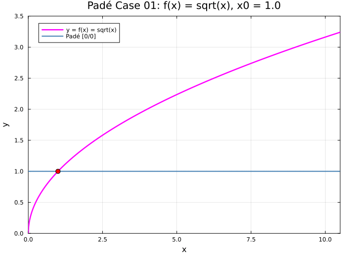
Case 02 — \(f(x)=\sqrt{x}\), \(x_0=4\), \(x\in[0,10.5]\)

Case 03 — \(f(x)=\sqrt{x}\), \(x_0=5\), \(x\in[0,10.5]\)

Case 04 — \(f(x)=\dfrac{1}{\sqrt{1-x}}\), \(x_0=0\), \(x\in[-1.5,1.5]\)
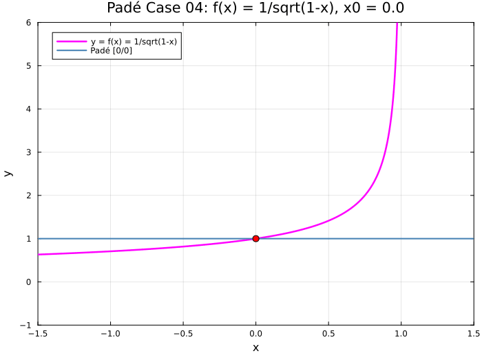
Case 05 — \(f(x)=\log(x)\), \(x_0=1\), \(x\in[-0.5,4.1]\)
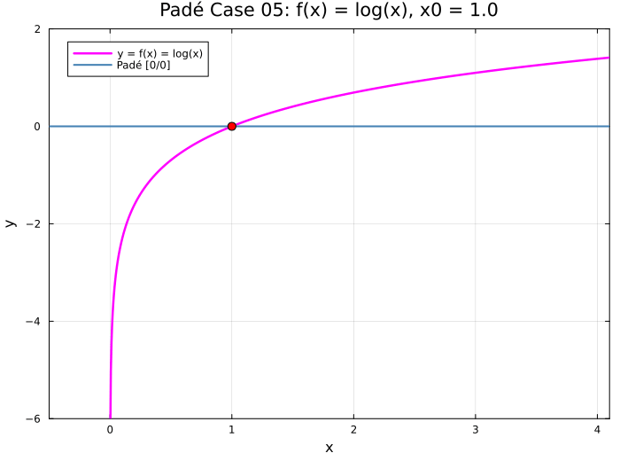
Case 06 — \(f(x)=\log(x)\), \(x_0=2\), \(x\in[-0.5,4.1]\)
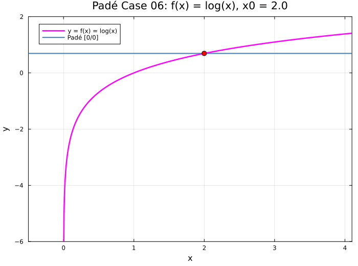
Case 07 — \(f(x)=\log(1+x)\), \(x_0=0\), \(x\in[-1.5,1.5]\)
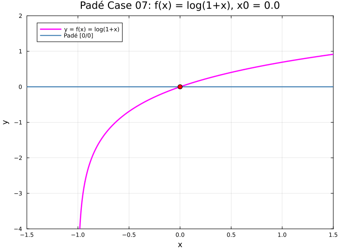
Case 08 — \(f(x)=\sin(x)\), \(x_0=0\), \(x\in[-3\pi,3\pi]\)
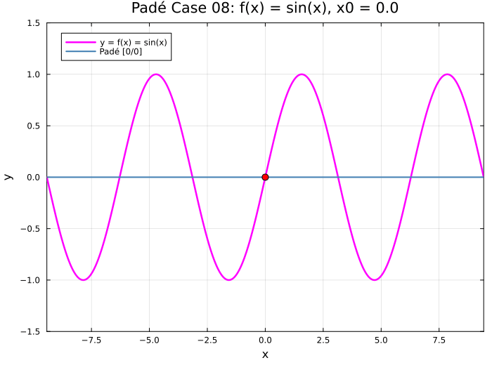
Case 09 — \(f(x)=\cos(x)\), \(x_0=0\), \(x\in[-3\pi,3\pi]\)
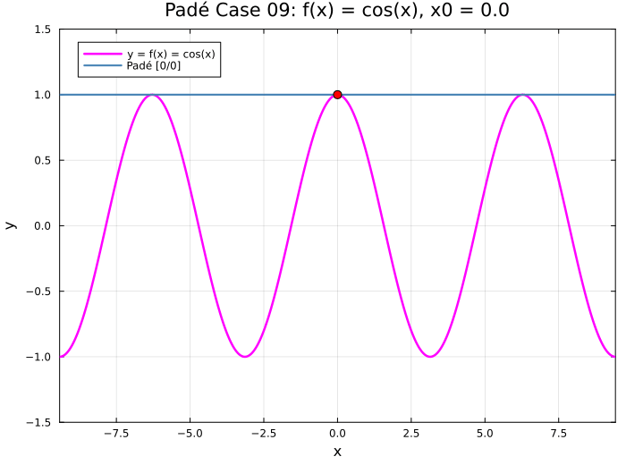
Case 10 — \(f(x)=\sin(x)\), \(x_0=\pi/4\), \(x\in[-7\pi/4,9\pi/4]\)

Case 11 — \(f(x)=\cos(x)\), \(x_0=\pi/3\), \(x\in[-5\pi/3,7\pi/3]\)
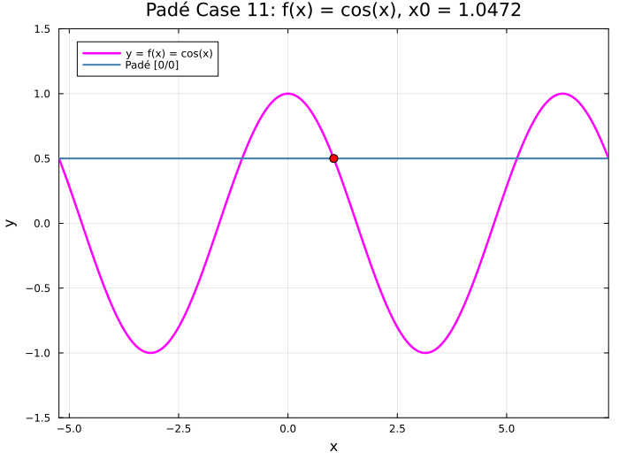
Case 12 — \(f(x)=\tan(x)\), \(x_0=0\), \(x\in[-\pi,\pi]\)

Case 13 — \(f(x)=e^x\), \(x_0=0\), \(x\in[-2,3]\)
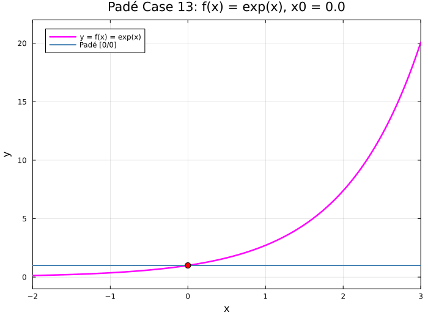
Case 14 — \(f(x)=e^{-x}\cos(x)\), \(x_0=0\), \(x\in[-2,4]\)
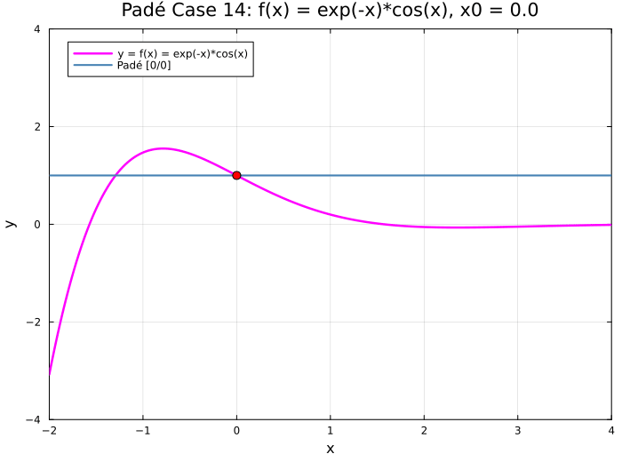
Case 15 — \(f(x)=\cosh(x)\), \(x_0=0\), \(x\in[-4,4]\)

Case 16 — \(f(x)=\arctan(x)\), \(x_0=0\), \(x\in[-2,2]\)

Case 17 — \(f(x)=\arcsin(x)\), \(x_0=0\), \(x\in[-1.5,1.5]\)

Case 18 — \(f(x)=J_0(x)\), \(x_0=0\), \(x\in[-10.2,10.2]\)

Case 19 — \(f(x)=J_1(x)\), \(x_0=0\), \(x\in[-10.2,10.2]\)
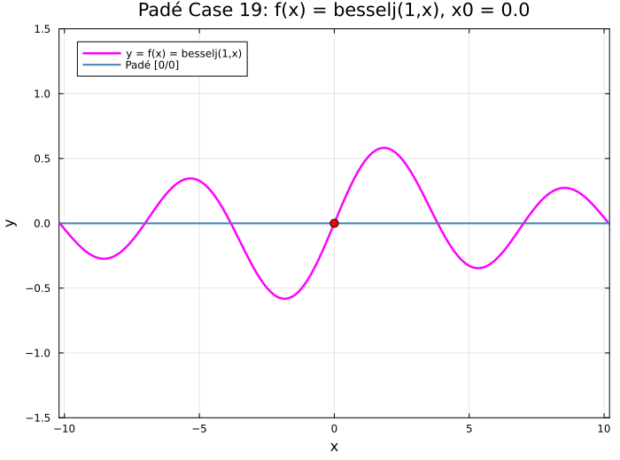
Case 20 — \(f(x)=\dfrac{1}{\sqrt{2\pi}}e^{-x^2/2}\), \(x_0=0\), \(x\in[-3,3]\)
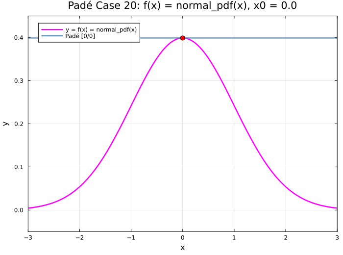
Case 21 — \(f(x)=\dfrac{1}{2}+\dfrac{1}{2}\operatorname{erf}\!\left(\dfrac{x}{\sqrt{2}}\right)\), \(x_0=0\), \(x\in[-3,3]\)
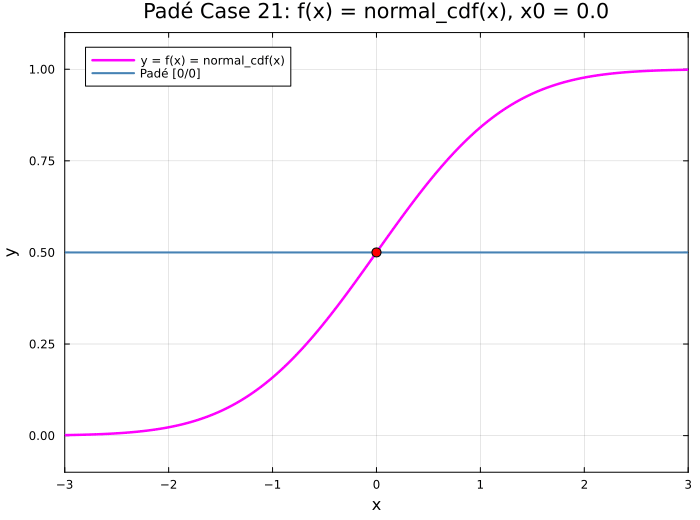
Case 22 — \(f(x)=\Gamma(x)\), \(x_0=1\), \(x\in[-0.2,5.2]\)
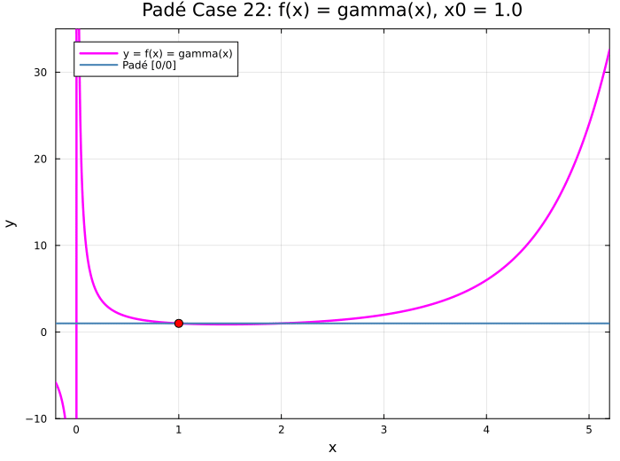
Case 23 — \(f(x)=\Gamma(x)\), \(x_0=2\), \(x\in[-0.2,5.2]\)
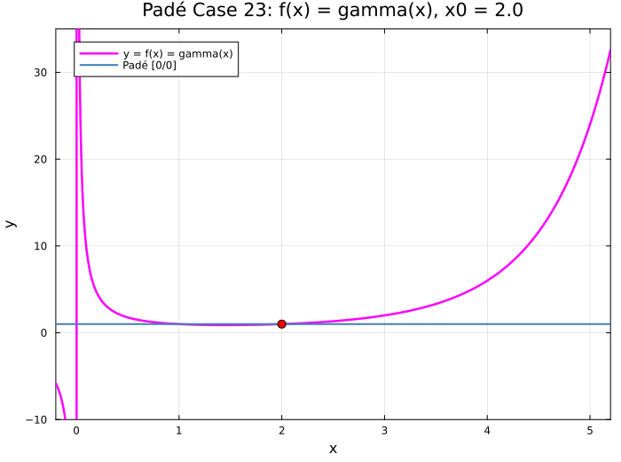
Case 24 — \(f(x)=\Gamma(x)\), \(x_0=3\), \(x\in[-0.2,5.2]\)
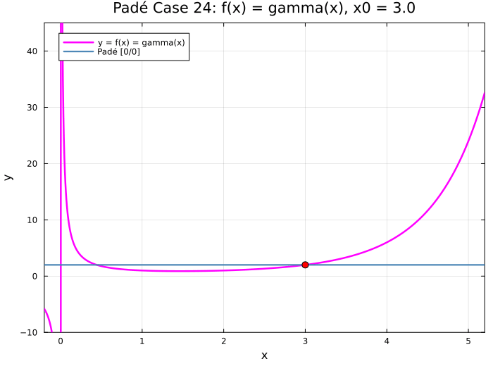
Case 25 — \(f(x)=Y_0(x)\), \(x_0=10\), \(x\in[0,22]\)

Case 26 — \(f(x)=Y_0(x)\), \(x_0=5\), \(x\in[0,22]\)
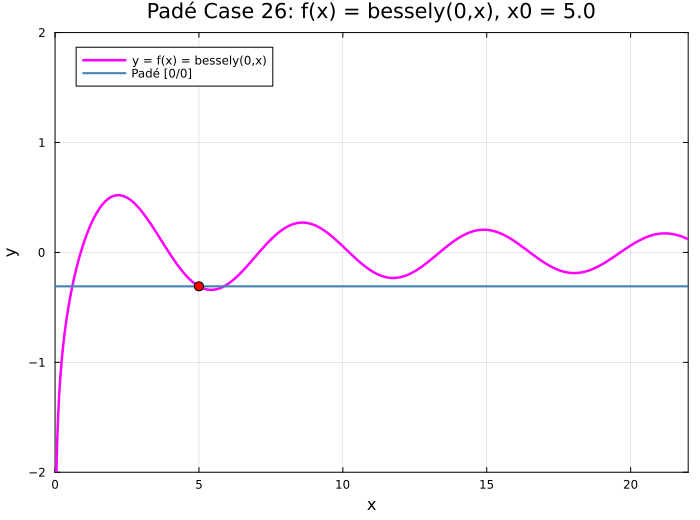
Case 27 — \(f(x)=Y_0(x)\), \(x_0=2\), \(x\in[0,22]\)